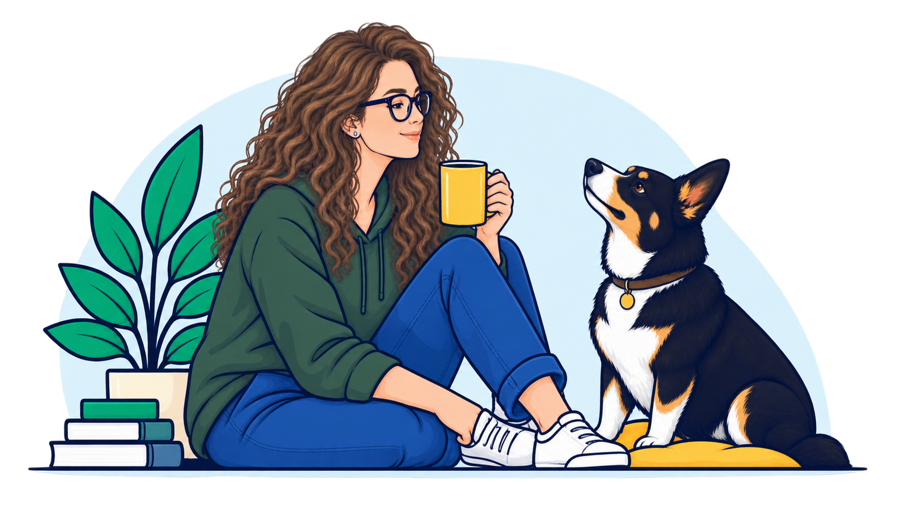

Facts come before fluency
Product claims should be grounded in information you can verify.
ABOUT
Penstack exists because too much of the work around building something meaningful can disappear into repetition.
The goal is simple: spend less time rebuilding the same process and more time on the parts that need your judgment, creativity, and attention.

HOW PENSTACK STARTED
Penstack was born during a period of rebuilding.
After a series of losses, I found myself thinking differently about the things I kept putting off. One of them was Looking for the Ridiculous, a brand I had wanted to bring to life for years.
At some point, waiting for the perfect time stopped making sense.
So I started building it.
THEN CAME THE WORK
Bringing LFTR to life meant doing everything myself: products, positioning, merchandising, storefront work, images, descriptions, SEO, metadata, organization, and all the tiny decisions sitting between an idea and a finished product page.
I expected it to be a lot of work.
What surprised me was how much of that work was the same work, repeated.

THERE HAD TO BE A BETTER WAY
Product listings and SEO were some of the biggest time sinks. Not because the strategy was unimportant. The opposite.
So much energy was going into the mechanics around the strategy that, by the time the checklist was finished, there was less attention left for the decisions that actually needed it.
With a background spanning product, marketing, customer experience, ecommerce, and workflow design, I kept coming back to the same question:
BUILT FOR THE REPETITIVE MIDDLE
Penstack brings the repetitive parts of product listing work into one connected workflow: product information, descriptions, search context, image details, supported organization, review, and publishing.
You still decide what is accurate. You still edit. You still approve what goes live.
Penstack gives you a better starting point and fewer handoffs between you and finished.

Product claims should be grounded in information you can verify.
Penstack can help express the brand, but the business still defines the audience, language, and boundaries.
Nothing should replace the judgment of the person who actually knows the product.
WHAT GETTING TIME BACK ACTUALLY MEANS
A NOTE FROM MALLORY
I wanted more room for the parts of building a brand that made me want to keep building it.
I hope Penstack gives you some of that room too.
More time for what inspires you. More time for what moves the business forward. More time with your craft.
START WITH SOMETHING REAL
See what Penstack can take off your plate while you stay in control of what gets published.